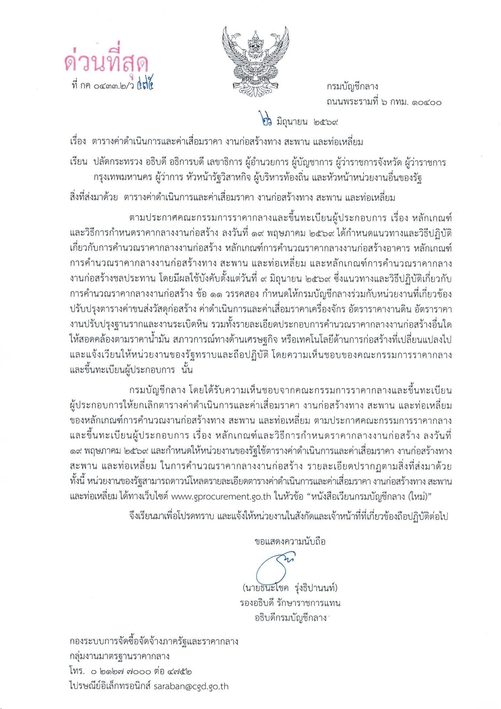
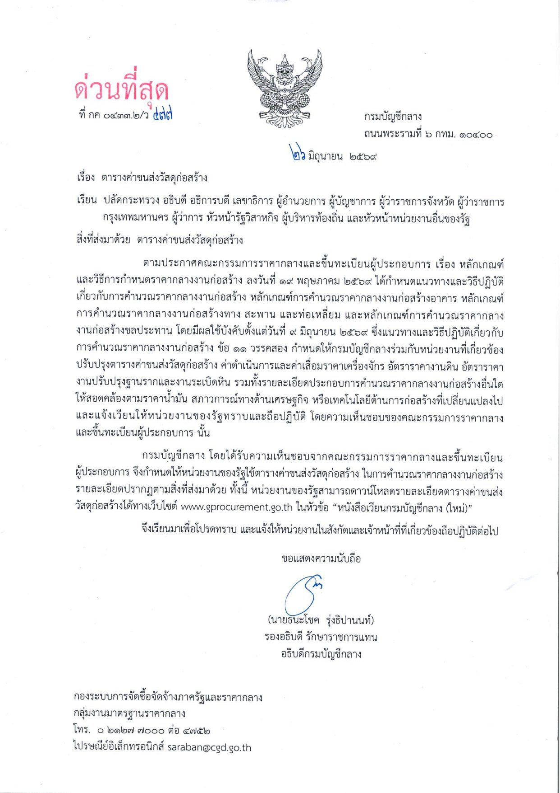

ค้นหาตารางจากราคาน้ำมันดีเซล
ระบบจะเลือกช่วงราคาน้ำมัน (step ละ 1.00 บาท) ที่ครอบคลุมราคาที่กรอก แล้วโหลดหน้าเอกสารจริง (ไฟล์ต้นฉบับ) ของทั้ง 2 เอกสารไว้ให้พร้อมพิมพ์ — เลือกพิมพ์ทีละเอกสาร หรือพิมพ์รวมกันก็ได้ ไม่ขึ้นกับแท็บที่กำลังเปิดอยู่
เรียกดูค่าต่างๆ ทั้งหมด (45 ช่วงราคาน้ำมัน)
เลือกช่วงราคาเพื่อดูตารางแบบเต็มโดยไม่ต้องกรอกราคาน้ำมัน หรือพิมพ์คำค้นเพื่อไฮไลต์รายการที่ต้องการ (ตารางนี้สร้างจากข้อมูลในเอกสาร สำหรับดูค่าสะดวกๆ เท่านั้น ไม่ใช้พิมพ์)
เกี่ยวกับตารางค่าขนส่งวัสดุก่อสร้าง
เอกสารนี้เป็นตารางสำเร็จรูปตามระดับราคาน้ำมันดีเซล (25.00–69.99 บาท/ลิตร ทีละ 1.00 บาท) แยกเป็น 3 ชุดตามชนิดรถบรรทุก แต่ละช่วงราคาแสดงอัตราค่าขนส่ง (บาท/ตัน และ บาท/ลบ.ม.) ตามระยะทางขนส่ง 1–200 กม. เป็นรายกิโลเมตร และอัตราต่อกิโลเมตรสำหรับระยะทาง 201–1,000 กม. ใช้ได้กับการขนส่งบนพื้นผิวทางราบปกติ (ทางราบผิวลาดยางหรือผิวคอนกรีต) เท่านั้น กรอกราคาน้ำมันและเลือกชนิดรถทางด้านซ้ายก่อน แล้วกดพิมพ์เพื่อดูตารางอัตราเต็มจากเอกสารต้นฉบับ หรือกดปุ่มด้านล่างเพื่อถอดตัวเลขมาดูบนหน้าจอ
เมื่อขนส่งบนทางที่ไม่ใช่ทางราบปกติ (ทางลูกรัง ทางลูกเนิน หรือทางภูเขา) ให้แปลงระยะทางแต่ละช่วงเป็น "ระยะทางเทียบเท่าทางราบ" โดยคูณด้วยตัวแปรสภาพผิวทางในตารางด้านล่าง รวมเป็นระยะทางรวม D แล้วหาตัวแปรค่าขนส่ง F = D / L (L คือระยะทางจริงจากแหล่งวัสดุถึงหน้างาน) จากนั้นนำ F คูณกับอัตราค่าขนส่งที่ระยะทาง L กม. จากตารางค่าขนส่งของรถแต่ละชนิด จะได้ค่าขนส่งที่ใช้จริง (บาท/ตัน หรือ บาท/ลบ.ม.)
| ลำดับ | ชนิดรถบรรทุก | ผิวทางลาดยาง / คอนกรีต | ผิวทางลูกรัง | ||||
|---|---|---|---|---|---|---|---|
| ที่ราบ | ลูกเนิน | ภูเขา | ที่ราบ | ลูกเนิน | ภูเขา | ||
| 1 | รถบรรทุก 6 ล้อ | 1.00 | 2.12 | 2.56 | 1.24 | 2.36 | 2.80 |
| 2 | รถบรรทุก 10 ล้อ | 1.00 | 1.95 | 2.52 | 1.23 | 2.18 | 2.75 |
| 3 | รถบรรทุก 10 ล้อ และรถลากพ่วง | 1.00 | 2.13 | – | 1.20 | 2.33 | – |
หมายเหตุ: ทางลูกเนิน หมายถึงทางที่มีความลาดชัน 4–8% ทางภูเขา หมายถึงทางที่มีความลาดชันมากกว่า 8% และกรณีระยะทางขนส่งน้อยกว่า 1 กิโลเมตร ให้ใช้อัตราค่าขนส่งของระยะทาง 1 กิโลเมตร
รถบรรทุก 10 ล้อ — ไม่ต้องทำ Stock pile, ปริมาณจราจรระดับปกติถึงหนาแน่น, ภูมิประเทศที่ราบและทางภูเขา ผิวทางลาดยางและ/หรือลูกรัง
รถบรรทุก 10 ล้อและรถลากพ่วง — ใช้ขนส่งวัสดุที่เป็นถังใหญ่ (Bulk) เช่น เหล็ก ยางแอสฟัลท์ ปูนซีเมนต์ผง, มีการทำ Stock pile ไว้ก่อน, ภูมิประเทศที่ราบและทางลูกเนิน (ไม่ใช้กับทางภูเขา)
รถบรรทุก 6 ล้อ — ขนส่งบนทางภูเขาหรือทางลาดชันมาก, ในเขตชุมชนที่จราจรหนาแน่น (เช่น กรุงเทพฯ เขตเทศบาลเมือง), งานขนาดเล็กหรือระยะเวลาดำเนินการสั้น, พื้นที่ก่อสร้างคับแคบ

